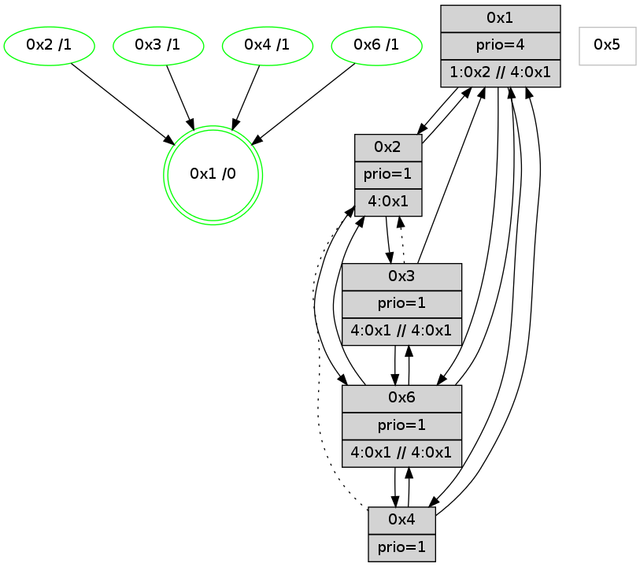

>> << IDX [start] -100 -25 -5 +0 +5 +25 +100 [790.003196955]
 Previous packets
----------------------------------------------------------------------
785.062155 beacon01(adaf) #0 coord=01,02,05,03,04,06 cycle=432.0ms assoc
-- color-indic=1 64 3c d3
785.072116 beacon02(adaf) #0 coord=01,02,05,03,04,06 cycle=432.0ms assoc 64 6d 2c
785.082117 beacon05(adaf) #0 coord=01,02,05,03,04,06 cycle=432.0ms assoc 64 cb 06
785.092116 beacon03(adaf) #0 coord=01,02,05,03,04,06 cycle=432.0ms assoc 64 57 22
785.102117 beacon04(adaf) #0 coord=01,02,05,03,04,06 cycle=432.0ms assoc 64 f1 08
785.112118 beacon06(adaf) #0 coord=01,02,05,03,04,06 cycle=432.0ms assoc 64 85 14
785.123883 [Hello(6): seq=502 sym=3,4,1,2 sysInfo=hasWarning,coloring-mode-on,ColoringModeIndicationCalled stat=3:13,14,9,1/4:6,13,1,0/1:4,13,15,1/2:14,11,4,2]
785.126047 [Color(1) seq=15 @0:0 prio=4 >1.@2,1.@3,1.@6]
----------------------------------------------------------------------
785.554263 beacon01(adaf) #0 coord=01,02,05,03,04,06 cycle=432.0ms assoc
-- color-indic=1 64 62 b2
785.564224 beacon02(adaf) #0 coord=01,02,05,03,04,06 cycle=432.0ms assoc 64 33 4d
785.574223 beacon05(adaf) #0 coord=01,02,05,03,04,06 cycle=432.0ms assoc 64 95 67
785.584225 beacon03(adaf) #0 coord=01,02,05,03,04,06 cycle=432.0ms assoc 64 09 43
785.594226 beacon04(adaf) #0 coord=01,02,05,03,04,06 cycle=432.0ms assoc 64 af 69
785.604225 beacon06(adaf) #0 coord=01,02,05,03,04,06 cycle=432.0ms assoc 64 db 75
785.616730 [Color(6) seq=15 @0:0 prio=1 >4.@1,1.@2,1.@3 >>4.@1,1.@2,1.@3]
785.618769 [Hello(1): seq=488 sym=2,3,4,6 sysInfo=hasWarning,coloring-mode-on,ColoringModeRequestCalled stat=2:5,12,4,2/3:12,11,8,1/4:3,10,3,0/6:0,1,1,0]
785.620755 [Hello(4): seq=589 sym=6,1 asym=2 sysInfo=hasWarning,coloring-mode-on,ColoringModeIndicationCalled stat=6:5,0,6,10/1:2,0,15,1/2:5,8,1,0]
785.622708 [Hello(2): seq=1079 sym=6,3,1 sysInfo=coloring-mode-on,ColoringModeIndicationCalled stat=6:10,1,2,3/3:0,1,1,0/1:0,0,14,1]
785.624472 [Color(4) seq=15 @0:0 prio=1]
785.626516 [Color(2) seq=15 @0:0 prio=1 >4.@1,1.@3,1.@4,1.@6]
----------------------------------------------------------------------
786.046370 beacon01(adaf) #0 coord=01,02,05,03,04,06 cycle=432.0ms assoc
-- color-indic=1 64 a6 dd
786.056332 beacon02(adaf) #0 coord=01,02,05,03,04,06 cycle=432.0ms assoc 64 f7 22
786.066331 beacon05(adaf) #0 coord=01,02,05,03,04,06 cycle=432.0ms assoc 64 51 08
786.076332 beacon03(adaf) #0 coord=01,02,05,03,04,06 cycle=432.0ms assoc 64 cd 2c
786.086333 beacon04(adaf) #0 coord=01,02,05,03,04,06 cycle=432.0ms assoc 64 6b 06
786.096334 beacon06(adaf) #0 coord=01,02,05,03,04,06 cycle=432.0ms assoc 64 1f 1a
786.108098 [Hello(6): seq=503 sym=3,4,1,2 sysInfo=hasWarning,coloring-mode-on,ColoringModeIndicationCalled stat=3:14,15,9,1/4:6,13,1,0/1:5,14,15,1/2:15,12,4,2]
786.110332 [Color(1) seq=16 @0:0 prio=4 >1.@2,1.@3,1.@6 >>4.@1,1.@2,1.@3]
----------------------------------------------------------------------
786.538479 beacon01(adaf) #0 coord=01,02,05,03,04,06 cycle=432.0ms assoc
-- color-indic=1 64 ea 6d
786.548440 beacon02(adaf) #0 coord=01,02,05,03,04,06 cycle=432.0ms assoc 64 bb 92
786.558443 beacon05(adaf) #0 coord=01,02,05,03,04,06 cycle=432.0ms assoc 64 1d b8
786.568440 beacon03(adaf) #0 coord=01,02,05,03,04,06 cycle=432.0ms assoc 64 81 9c
786.578440 beacon04(adaf) #0 coord=01,02,05,03,04,06 cycle=432.0ms assoc 64 27 b6
786.588441 beacon06(adaf) #0 coord=01,02,05,03,04,06 cycle=432.0ms assoc 64 53 aa
786.599601 [Hello(1): seq=489 sym=2,3,4,6 sysInfo=hasWarning,coloring-mode-on,ColoringModeRequestCalled stat=2:6,13,4,2/3:12,12,8,1/4:4,10,3,0/6:0,1,1,0]
786.605352 [Color(4) seq=16 @0:0 prio=1]
786.607689 [STC(1) #0.60 new-neigh,tree-change,stable,to-color d=0]
----------------------------------------------------------------------
787.030587 beacon01(adaf) #0 coord=01,02,05,03,04,06 cycle=432.0ms assoc
-- color-indic=1 64 2e 02
787.040548 beacon02(adaf) #0 coord=01,02,05,03,04,06 cycle=432.0ms assoc 64 7f fd
787.050549 beacon05(adaf) #0 coord=01,02,05,03,04,06 cycle=432.0ms assoc 64 d9 d7
787.060549 beacon03(adaf) #0 coord=01,02,05,03,04,06 cycle=432.0ms assoc 64 45 f3
787.070549 beacon04(adaf) #0 coord=01,02,05,03,04,06 cycle=432.0ms assoc 64 e3 d9
787.080550 beacon06(adaf) #0 coord=01,02,05,03,04,06 cycle=432.0ms assoc 64 97 c5
787.092139 [STC(4)->1 #0.60 new-neigh,tree-change,stable,to-color d=1]
787.094396 [Color(1) seq=17 @0:0 prio=4 >1.@2,1.@3,1.@6 >>4.@1,1.@2,1.@3]
787.096212 [Hello(6): seq=504 sym=3,4,1,2 sysInfo=hasWarning,coloring-mode-on,ColoringModeIndicationCalled stat=3:14,15,9,1/4:6,13,1,0/1:6,15,0,1/2:15,12,4,2]
787.099975 [STC(6)->1 #0.60 new-neigh,tree-change,stable,to-color d=1]
----------------------------------------------------------------------
787.522698 beacon01(adaf) #0 coord=01,02,05,03,04,06 cycle=432.0ms assoc
-- color-indic=1 64 63 05
787.532658 beacon02(adaf) #0 coord=01,02,05,03,04,06 cycle=432.0ms assoc 64 32 fa
787.542661 beacon05(adaf) #0 coord=01,02,05,03,04,06 cycle=432.0ms assoc 64 94 d0
787.552659 beacon03(adaf) #0 coord=01,02,05,03,04,06 cycle=432.0ms assoc 64 08 f4
787.562659 beacon04(adaf) #0 coord=01,02,05,03,04,06 cycle=432.0ms assoc 64 ae de
787.572660 beacon06(adaf) #0 coord=01,02,05,03,04,06 cycle=432.0ms assoc 64 da c2
787.583515 [Hello(1): seq=490 sym=2,3,4,6 sysInfo=hasWarning,coloring-mode-on,ColoringModeRequestCalled stat=2:6,13,4,2/3:12,12,8,1/4:4,10,3,0/6:1,1,2,0]
787.589264 [Color(4) seq=17 @0:0 prio=1]
----------------------------------------------------------------------
788.014805 beacon01(adaf) #0 coord=01,02,05,03,04,06 cycle=432.0ms assoc
-- color-indic=1 64 a7 6a
788.024768 beacon02(adaf) #0 coord=01,02,05,03,04,06 cycle=432.0ms assoc 64 f6 95
788.034766 beacon05(adaf) #0 coord=01,02,05,03,04,06 cycle=432.0ms assoc 64 50 bf
788.044766 beacon03(adaf) #0 coord=01,02,05,03,04,06 cycle=432.0ms assoc 64 cc 9b
788.054767 beacon04(adaf) #0 coord=01,02,05,03,04,06 cycle=432.0ms assoc 64 6a b1
788.064768 beacon06(adaf) #0 coord=01,02,05,03,04,06 cycle=432.0ms assoc 64 1e ad
788.076398 [Color(1) seq=18 @0:0 prio=4 >1.@2,1.@3,1.@6 >>4.@1,1.@2,1.@3]
788.080179 [Hello(6): seq=505 sym=3,4,1,2 sysInfo=hasWarning,coloring-mode-on,ColoringModeIndicationCalled stat=3:14,0,9,1/4:6,13,1,0/1:7,15,0,1/2:15,12,4,2]
----------------------------------------------------------------------
788.506913 beacon01(adaf) #0 coord=01,02,05,03,04,06 cycle=432.0ms assoc
-- color-indic=1 64 eb da
788.516874 beacon02(adaf) #0 coord=01,02,05,03,04,06 cycle=432.0ms assoc 64 ba 25
788.526875 beacon05(adaf) #0 coord=01,02,05,03,04,06 cycle=432.0ms assoc 64 1c 0f
788.536875 beacon03(adaf) #0 coord=01,02,05,03,04,06 cycle=432.0ms assoc 64 80 2b
788.546874 beacon04(adaf) #0 coord=01,02,05,03,04,06 cycle=432.0ms assoc 64 26 01
788.556875 beacon06(adaf) #0 coord=01,02,05,03,04,06 cycle=432.0ms assoc 64 52 1d
788.573372 [Hello(4): seq=592 sym=6,1 asym=2 sysInfo=hasWarning,coloring-mode-on,ColoringModeIndicationCalled stat=6:8,0,7,10/1:4,3,0,1/2:5,9,1,0]
788.575351 [Hello(2): seq=1082 sym=6,3,1 sysInfo=coloring-mode-on,ColoringModeIndicationCalled stat=6:13,1,3,3/3:0,1,1,0/1:2,3,15,1]
788.577089 [Color(4) seq=18 @0:0 prio=1]
788.579159 [Color(2) seq=18 @0:0 prio=1 >4.@1,1.@3,1.@4,1.@6]
----------------------------------------------------------------------
788.999020 beacon01(adaf) #0 coord=01,02,05,03,04,06 cycle=432.0ms assoc
-- color-indic=1 64 2f b5
789.008983 beacon02(adaf) #0 coord=01,02,05,03,04,06 cycle=432.0ms assoc 64 7e 4a
789.018981 beacon05(adaf) #0 coord=01,02,05,03,04,06 cycle=432.0ms assoc 64 d8 60
789.028982 beacon03(adaf) #0 coord=01,02,05,03,04,06 cycle=432.0ms assoc 64 44 44
789.038982 beacon04(adaf) #0 coord=01,02,05,03,04,06 cycle=432.0ms assoc 64 e2 6e
789.048983 beacon06(adaf) #0 coord=01,02,05,03,04,06 cycle=432.0ms assoc 64 96 72
789.060723 [Hello(6): seq=506 sym=3,4,1,2 sysInfo=hasWarning,coloring-mode-on,ColoringModeIndicationCalled stat=3:15,1,9,1/4:6,13,1,0/1:7,15,0,1/2:0,13,4,2]
789.064491 [STC(1) #0.61 new-neigh,tree-change,stable,to-color d=0]
789.067718 [Color(1) seq=19 @0:0 prio=4 >1.@2,1.@3,1.@6 >>4.@1,1.@2,1.@3]
----------------------------------------------------------------------
789.491128 beacon01(adaf) #0 coord=01,02,05,03,04,06 cycle=432.0ms assoc
-- color-indic=1 64 0a 88
789.501088 beacon02(adaf) #0 coord=01,02,05,03,04,06 cycle=432.0ms assoc 64 5b 77
789.511091 beacon05(adaf) #0 coord=01,02,05,03,04,06 cycle=432.0ms assoc 64 fd 5d
789.521089 beacon03(adaf) #0 coord=01,02,05,03,04,06 cycle=432.0ms assoc 64 61 79
789.531089 beacon04(adaf) #0 coord=01,02,05,03,04,06 cycle=432.0ms assoc 64 c7 53
789.541091 beacon06(adaf) #0 coord=01,02,05,03,04,06 cycle=432.0ms assoc 64 b3 4f
789.552018 [Hello(1): seq=492 sym=2,4,6 sysInfo=hasWarning,coloring-mode-on,ColoringModeRequestCalled stat=2:8,15,4,2/4:5,11,3,0/6:2,1,2,0]
789.557173 [Color(6) seq=19 @0:0 prio=1 >4.@1,1.@2,1.@3 >>4.@1,1.@2,1.@3]
789.559174 [STC(3)->1 #0.61 new-neigh,tree-change,stable,to-color d=1]
789.561787 [Color(3) seq=19 @0:0 prio=1 >4.@1,1.@2,1.@6 >>4.@1,1.@2,1.@3]
789.568897 [STC(4)->1 #0.61 new-neigh,tree-change,stable,to-color d=1]
789.571177 [Color(4) seq=19 @0:0 prio=1]
----------------------------------------------------------------------
789.983236 beacon01(adaf) #0 coord=01,02,05,03,04,06 cycle=432.0ms assoc
-- color-indic=1 64 ce e7
789.993197 beacon02(adaf) #0 coord=01,02,05,03,04,06 cycle=432.0ms assoc 64 9f 18